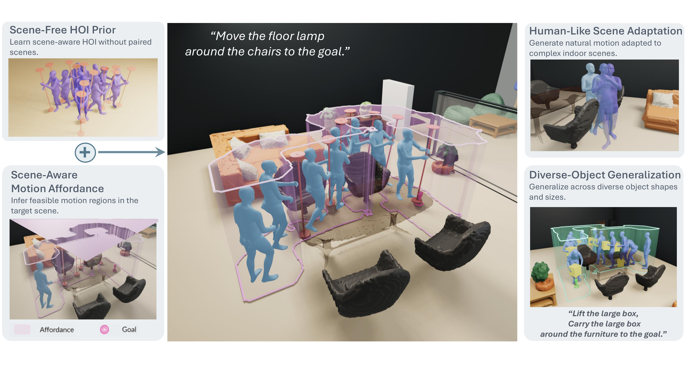
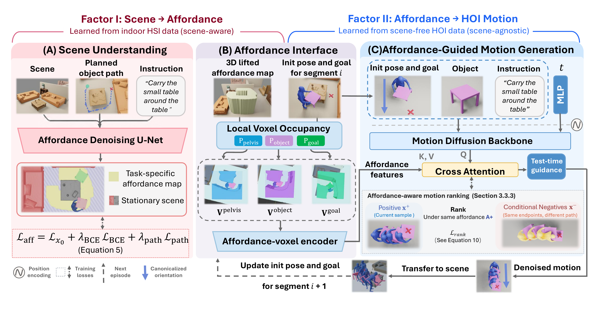

Scene understanding
Human–scene datasets provide environment-aware motion but lack detailed object manipulation dynamics.
An affordance-mediated formulation that connects scene-level interaction feasibility with detailed human–object motion synthesis.
Generating realistic human–object interactions in complex 3D scenes requires two complementary capabilities: reasoning about interaction feasibility in the environment and synthesizing realistic human–object motion. Supervision for these capabilities, however, is rarely available jointly at scale.
We present MAMHOI, an affordance-mediated factorization for scene-aware human–object interaction generation. A scene-conditioned model first predicts where and how an interaction can be feasibly executed. An affordance-conditioned HOI model then generates the corresponding synchronized human–object motion. This formulation enables scene understanding and interaction dynamics to be learned from complementary sources of supervision without requiring paired human–object–scene data.
Experiments in complex indoor environments show that MAMHOI reduces object–scene penetration while preserving human–object interaction quality, producing more realistic and physically feasible scene-aware interactions.

MAMHOI transfers scene-free HOI priors to complex environments through scene-aware motion affordances.
The video presents the formulation, model behavior, and representative results in complex indoor scenes.
Generated interactions under identical scene, object, and task conditions.
Scene-aware HOI generation must determine both where an interaction is physically feasible and how the human and object should move together. Yet the strongest supervision for these two capabilities comes from different datasets.
Human–scene datasets provide environment-aware motion but lack detailed object manipulation dynamics.
Human–object datasets capture rich contact and manipulation behavior but are typically scene-free.
A useful representation must transfer scene constraints without overwriting the interaction distribution learned from motion-rich HOI data.
MAMHOI separates scene understanding from human–object motion synthesis through a sequence-level motion affordance.

An affordance denoising network predicts task-specific feasible regions from scene geometry, the planned object path, and the language instruction.
Local occupancy around the human, object, and goal is encoded as affordance features that condition a diffusion-based human–object motion generator.